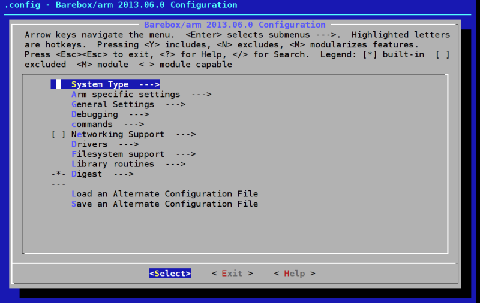
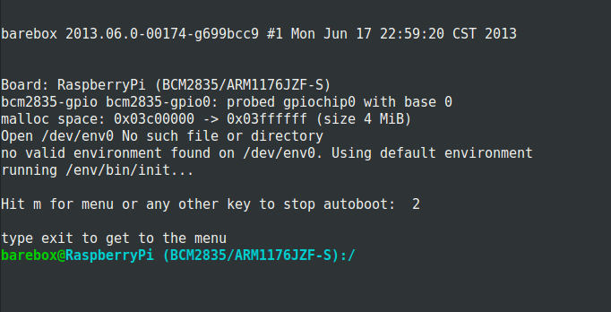

barebox 是 uboot 的第二代版本，和 u-boot 相比，barebox 的設計和 Linux Kernel 類似，因此對於有 Linux Kernel 開發經驗的使用者而言，要進行 barebox 的開發相對簡單。此外，barebox 亦提供有和編譯 Linux Kernel 使用 的 menuconfig 相同的介面，開發者可以快快樂樂的使用 menuconfig 來配置你的 barebox，而不需要像配置 uboot 那樣還要修改許多麻煩的巨集。
本文描述如何編譯以及讓你的 Raspberry Pi 一開機就進入到 barebox 環境， 以實務上而言並沒有多大用處，但是對於想嘗試 barebox 的開發者而言，這將 是體驗 barebox 功能的好方式。
取得 barebox
你可以到 barebox 官網 來下載最新釋出的穩定版本，或是用 git 取得目前開發中 的版本
git clone git://git.pengutronix.de/git/barebox.git
建立給 Raspberry Pi 使用的 toolchain
如果你是 Gentoo Linux 的使用者，你可以使用 crossdev 的功能來自己編譯給 ARMv6 使用的 toolchain，更詳細的資訊請參見 Raspberry Pi - Gentoo Wiki
crossdev -S -v -t armv6j-hardfloat-linux-gnueabi
如果你不是 Gentoo 的使用者，你可參考 How to build a cross compiler for your Raspberry Pi 一文，該文章清楚描述如何使用 crosstool-ng 來建立 Raspberry Pi 的 toolchain。
編譯 barebox
1. 修改當前 shell 的環境變數
因為我們是進行跨平台編譯，因此編譯的時候要加入 ARCH 以及 CROSS_COMPILE 的參數，這邊採用偷懶的做法，直接將資訊覆蓋到目前的 shell 上，這樣 在目前的 shell 就是用於編譯 arm 平台的開發環境了。
export ARCH=arm export CROSS_COMPILE=armv6j-hardfloat-linux-gnueabi-
2. 設定編譯的對象為 Raspberry Pi
make rpi_defconfig
3. 客制化選單
barebox 和 u-Boot 最大的不同，就是導入了 menuconfig 的機制，設定 barebox 就和設定 kernel 一樣，不用再修改一堆凌亂的 macro，這也是我最 喜歡 barebox 的一個地方。
make menuconfig
使用 menuconfig，你可以看到以下的選單，在這邊更改完設定就會將新的 設定存到 .config 裏面。

4. 將 SD 卡驅動編譯進去
barebox 預設的 rpi_defconfig 並未將 SD 卡驅動編進去，若你想在 barebox 上 面操作 SD 卡，則你必須將以下選項編入你的 barebox。
Drivers ---> [*] MCI drivers ---> [*] Probe on system start [*] MCI Info [*] Support writing to MCI cards [*] MCI support for BCM2835 Filesystem support ---> [*] FAT filesystem support ---> [*] FAT write support [*] Support long filenames
將 barebox 裝到 SD 卡上面
編譯完成後，你會看到當前目錄下有一個 barebox.bin 檔案，複製並取代他到 Raspberry Pi 開機 SD 卡上面的 kernel.img (請記得做好備份)，將你的 Raspberry Pi 重新開機，你就會看到登入 barebox 的畫面了。
